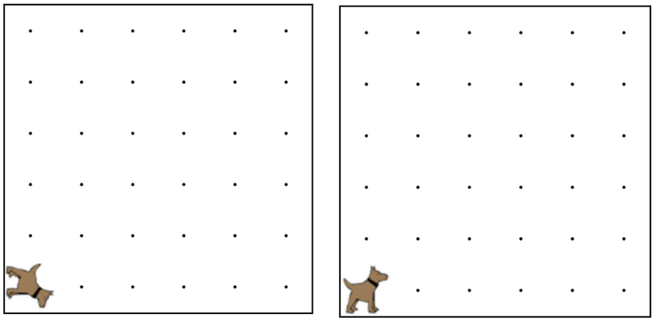

Karel got spun around and is facing the wrong direction.
Karel could be facing south or west, and you need to get
Karel back to facing east. You must use an if/else statement
here, and be sure to test your code on both worlds.
卡雷爾得到了轉身和面對錯誤的方向。卡雷爾可以朝南或朝西，你需要得到卡雷爾回朝東。
你必須在這裡使用if/ else語句，並且一定要在兩個世界測試你的代碼。

if (condition) { 如果 (條件) {
//code that will run if the condition is true
//在此條件為正確的情況下，將會執行的程式碼
}else{ } 否則 {
//code that will run if condition is not true
//在此條件為不正確的情況下，將會執行的程式碼
}
frontIsClear()
前方無障礙物()
leftIsClear()
左方無障礙物()
rightIsClear()
右方無障礙物()
frontIsBlocked()
前方有障礙物()
leftIsBlocked()
左方有障礙物()
rightIsBlocked()
右方有障礙物()
facingNorth()
面向北方()
facingSouth()
面向南方()
facingEast()
面向東方()
facingWest()
面向西方()
notFacingNorth()
不面向北方()
notFacingSouth()
不面向南方()
notFacingEast()
不面向東方()
notFacingWest()
不面向西方()
ballsPresent()
有球()
noBallsPresent()
沒有球 ()